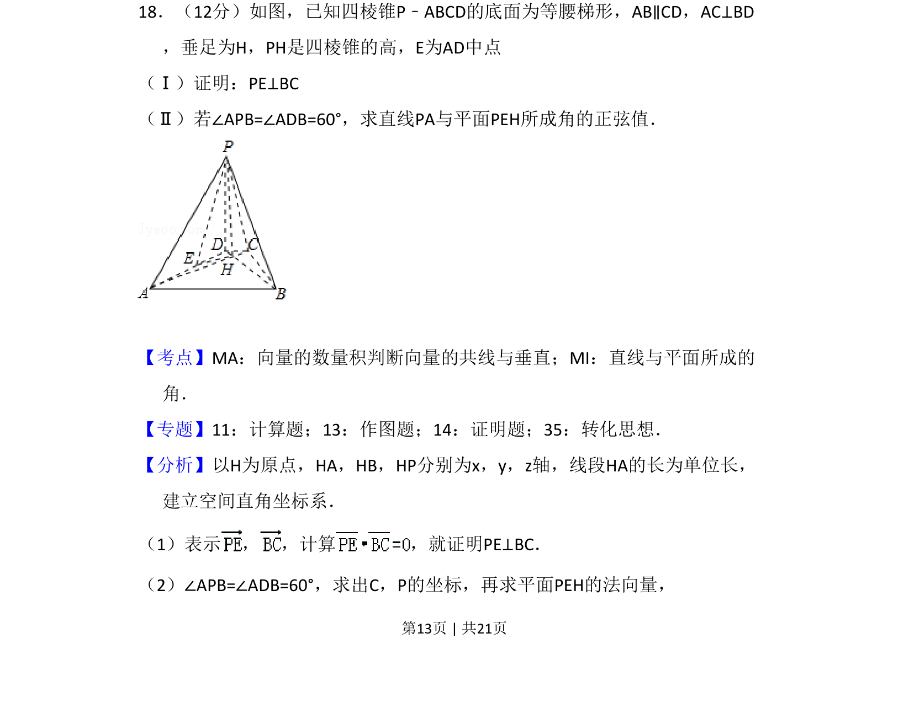
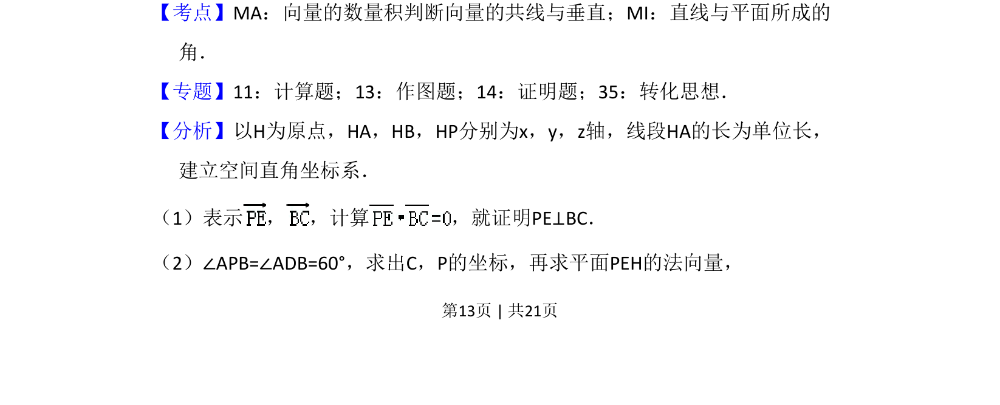
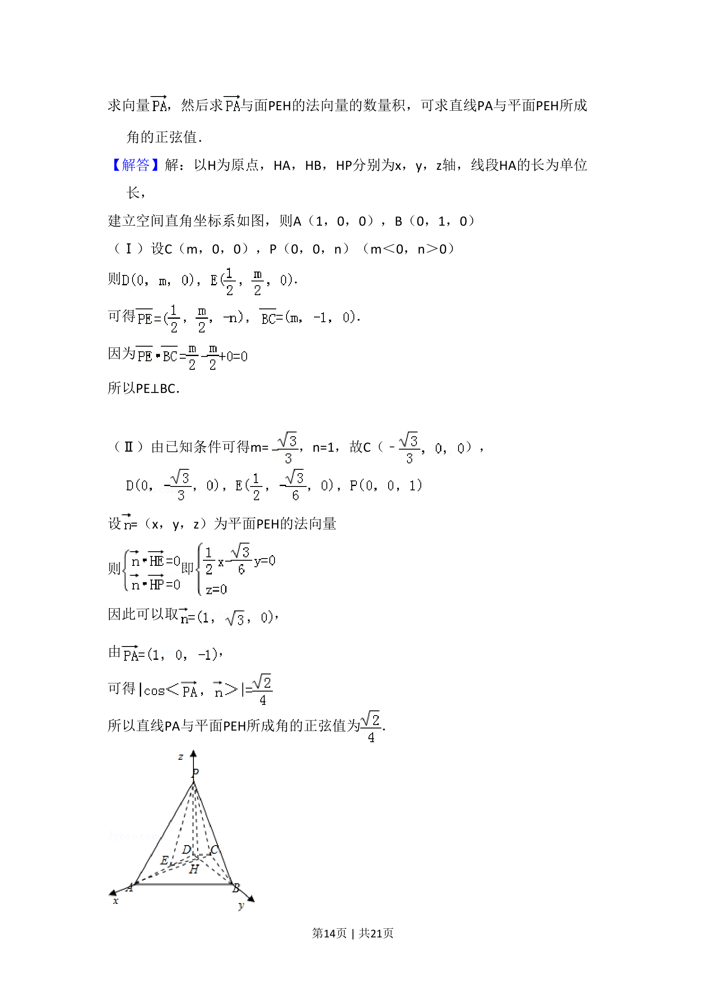
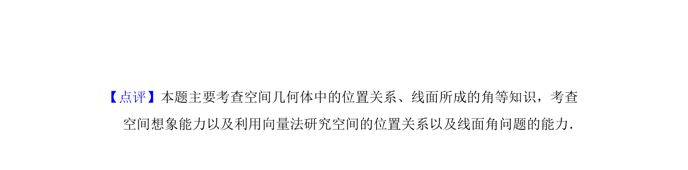

考点：平面向量数量积 线面角 空间直角坐标系

以四棱锥为载体，考查垂直关系的向量证明和线面角的正弦值计算



📄 原 PDF 第 13 页：
素材/真题/吉林/2008-2024·（吉林）数学高考真题/2010年高考数学试卷（理）（新课标）（解析卷）.pdf
18．（12分）如图，已知四棱锥P﹣ABCD的底面为等腰梯形，AB∥CD，AC⊥BD ，垂足为H，PH是四棱锥的高，E为AD中点 （Ⅰ）证明：PE⊥BC （Ⅱ）若∠APB=∠ADB=60°，求直线PA与平面PEH所成角的正弦值．
【考点】MA：向量的数量积判断向量的共线与垂直；MI：直线与平面所成的 角．菁优网版权所有 【专题】11：计算题；13：作图题；14：证明题；35：转化思想． 【分析】以H为原点，HA，HB，HP分别为x，y，z轴，线段HA的长为单位长， 建立空间直角坐标系． （1）表示 ， ，计算 ，就证明PE⊥BC． （2）∠APB=∠ADB=60°，求出C，P的坐标，再求平面PEH的法向量，